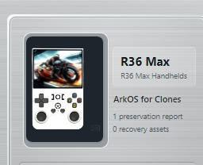

One label. Several questions RLB should answer before you rebuild anything.
The R36 Max is a useful example of why RLB is more than an SD-card copier. The name on the handheld is only the beginning: device identity, boot evidence, firmware relationships, display-panel compatibility, preserved content and deployment readiness are separate questions.
RLB DEVICE RECORD

This historical card is shown only as a device-record example. Preservation success is verified from current preservation state, not from an old Home-card label.
DEPLOYMENTSTOP0 validated targets in the captured readiness state
This is the point of the walkthrough: RLB can have a canonical R36 Max identity and strong hardware/fingerprint evidence while still refusing to create a deployment target because critical panel or recovery evidence is missing.
1. Why an R36 Max is not just “an R36 Max”
Low-cost retro handheld families can contain revisions, clones and loosely related hardware sold under similar names. Two units with the same printed product name can require different boot files, panels, DTBs or firmware handling.
For that reason, RLB should not treat a retail label, volume name or generic operating-system file as proof of exact hardware identity.
LABELProduct nameUseful context, but not enough to prove the board or display variant.
BOOTDTB / boot evidenceCan provide much stronger device-specific hardware relationships.
PANELDisplay variantCan determine whether otherwise plausible firmware is safe for the actual device.
FIRMWARECompatibilityA known firmware family is not automatically a validated target for every clone or panel.
2. First rule: protect the original media before experimenting
The factory card can contain far more than ROM folders: boot assets, firmware configuration, DTBs, BIOS files, frontend metadata, artwork, saves, configuration and device-specific files may exist across several partitions.
The safe starting point is therefore the same as RLB's general original-media workflow:
1Connect original mediaDo not alter it just to make the card easier to inspect.
→
2Analyze read-onlyGather device, partition, boot and content evidence before approving protection work.
→
3Review identityAsk whether the hardware and firmware result actually make sense for the device.
→
4Run protectionEstablish required Library representation and retained preservation content.
→
5VerifyTrust the verified preservation state, not the fact that a copy operation ended.
3. RLB should identify from evidence, not convenience
In this real R36 Max case, Runtime Knowledge resolves the canonical key as r36-max. The readiness model also shows very strong Clone / Fingerprint evidence.
That is more meaningful than simply seeing “R36 Max” printed on a shell because the identity is being connected to reusable knowledge about the device family.
OBSERVED DEVICER36 MaxThe physical product and source media being inspected.
+
DEVICE EVIDENCEBoot / fingerprint / hardware cluesDevice-specific evidence gathered from the source and known relationships.
→
CANONICAL IDENTITYr36-maxThe normalized device identity used by RLB knowledge and readiness.
4. Preservation separates reusable content from device-specific content
RLB does not need to create a full second copy of every reusable item just because it came from this handheld. If content can be safely represented by the verified Library, that Library representation can account for it.
Content that cannot be safely represented elsewhere remains retained with the preservation.
REUSABLE LIBRARYContent that can safely represent the source
Verified reusable game, BIOS, media or other managed content when the applicable representation rule is satisfied.
R36 MAX PRESERVATIONWhat remains device-specific or unresolved
Boot assets, configuration, saves and other verified content that cannot yet be represented safely by the reusable Library.
5. Retained today does not have to mean retained forever
Once the R36 Max preservation exists, its verified retained content can later be re-evaluated without returning to the original SD card.
That is the purpose of Reconcile Retained Content: Analyze the retained set, Preview what can now move into reusable Library representation, Confirm, then Apply only the approved reconciliation.
Preserved retained contentAlready captured with the R36 Max preservation.
→
Analyze / PreviewAsk what the current Library can now represent.
→
Confirmed ApplyEstablish valid reusable representations and leave unresolved items visible.
6. Preservation success and deployment readiness are different questions
This is where the R36 Max example becomes especially useful. Device Readiness knows the canonical device, but the captured readiness state still refuses deployment.
86%HardwareStrong hardware knowledge
0%PanelPanel remains unknown
70%FirmwareUseful but not safe without panel evidence
The captured R36 Max state: canonical identity r36-max, overall knowledge confidence 77%, but 0 deployable targets. The verdict is STOP — not safe to deploy because required evidence is still missing.
8. Why RLB says STOP even with strong identification evidence
The readiness result identifies the blocking reason directly: panel evidence is missing, so firmware cannot yet be considered safe for deployment. Recovery is also incomplete.
This is a feature, not a failure. A strong clone fingerprint does not prove that the exact display panel is compatible with a proposed firmware/DTB combination.
✓Device identity evidenceStrong enough to connect the unit to the R36 Max canonical knowledge.
✓Firmware knowledge existsThere is useful firmware recommendation evidence.
!Panel evidence missingCritical compatibility evidence is not yet established.
!Recovery incompleteA safe recovery path is not yet sufficiently established.
STOP0 validated targetsDo not turn partial knowledge into a deployment guess.
9. 77% confidence does not mean “77% safe”
Overall knowledge confidence is a summary of the available knowledge. Deployment safety is a gate.
A single missing requirement can block deployment even when several other evidence categories are strong. In this case, the panel requirement is important enough that the correct target count is zero.
KNOWLEDGE CONFIDENCE77%RLB knows a meaningful amount about this R36 Max.
≠
DEPLOYMENT SAFETYSTOPThe evidence required for a validated target is not complete.
10. What would move this R36 Max closer to deployment?
The Readiness view gives concrete evidence goals rather than an unexplained red light.
1Boot / storage layoutStrengthen knowledge of how the actual device expects its media to boot and partition.
2Firmware panel supportEstablish that the proposed firmware supports the exact display-panel relationship.
3DTB panel identificationMatch device-tree/panel evidence to a known compatible hardware variant.
4Recovery evidenceEstablish sufficient preservation/recovery knowledge before deployment becomes an acceptable risk.
11. What RLB adds that a simple SD-card image does not
JUST COPY THE CARD“I have a backup.”
You may have copied bytes, but you still do not necessarily know which hardware variant you own, which content is reusable, which content is unique, or whether a replacement build is compatible.
→
WITH RLB“I know what evidence I have.”
Identity, preserved content, reusable Library representation, retained device-specific material, knowledge provenance and deployment blockers remain separate and visible.
12. What this walkthrough deliberately does not do
This page does not tell you to flash a specific firmware image to the R36 Max shown here. The captured Readiness state has no validated deployment target, so a deployment recipe would contradict the evidence.
×No guessed firmware targetA recommendation is not the same as a validated target.
×No guessed panel / DTBMissing panel evidence is exactly why deployment is blocked.
×No instruction to erase the original cardOriginal media remains valuable until actual preservation and recovery requirements are satisfied.
×No unfinished Deployment documentationThe public guide will follow the validated Beta deployment workflow, not planned behavior.
The R36 Max RLB sequence
1UnderstandAnalyze the original media and gather device-specific evidence.
2PreserveProtect required content and retain what cannot yet be represented safely.
3VerifyUse persisted verification state rather than assuming copying equals preservation.
4LearnCarry device, DTB, firmware and hardware relationships into reusable knowledge.
5Check readinessRequire critical compatibility and recovery evidence before deployment.
6Build only when safeDeployment waits until the Knowledge Engine exposes a validated target.
Current captured result: this R36 Max stops at Step 5. That is the correct outcome until the missing panel/recovery evidence is resolved.